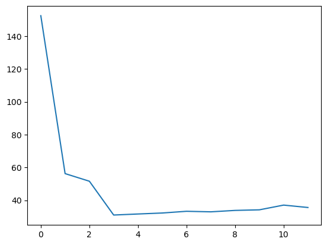
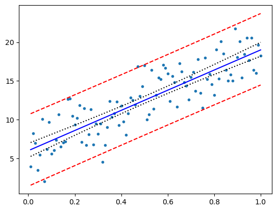
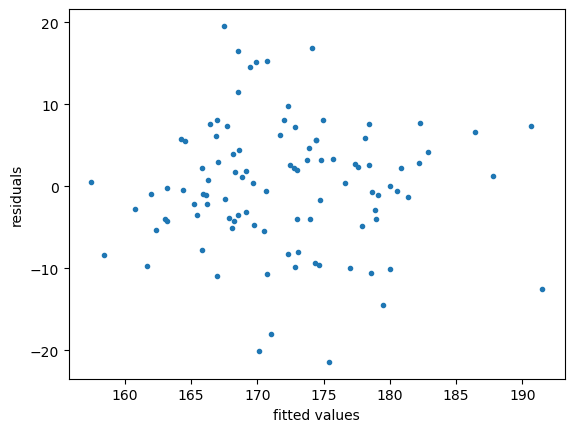

UNIT 5. Regression
This Unit includes main introduction to linear and non-linear regression, strongly based in [1].
Calculation of the Predicted Residual Sum of Squares (PRESS)
We start by defining that in a multiple linear regression model the response \(Y\) depends on a \(d\)-dimensional explanatory vector \(\mathbf{x}=[x_1,\ldots,x_d]^T\) via the relationship:
$\(Y=\beta_0 + \beta_1 x_1 + \cdots + \beta_d x_d + \varepsilon\)\(
where \)\mathbb{E}\varepsilon=0\( and \)\mathbb{Var}\varepsilon =\sigma^2$.
This is true for a given pair \((\mathbf{x},Y)\) of data. If we want to apply it to a whole training set \(\mathcal{T}=\{(\mathbf{x_1},Y_1),\ldots,(\mathbf{x_n},Y_n)\}\), we consider a linear model of the form:
$\(\mathbf{Y}=\mathbf{X}\mathbf{\beta}+\mathbf{\varepsilon}\)$
We return here to the polynomial regression problem that we explored in (Chapter 2)[UNIT2-Statistical-Learning.ipynb]. There, we estimated the generalization risk for various polynomial prediction functions using independent validation data. Here we calculate such generalization risk using cross validation and compute the PRESS using
$\(
\mathrm{PRESS}=\sum_{i=1}^n \left(\frac{e_i}{1-p_i}\right)^2
\)\(
where \)e_i=y_i-\hat{y_i}=y_i-(\mathbf{X}\hat{\mathbf{\beta}})\( is the \)i\( th residual and \)p_i\( are the diagonal values of the orthogonal projection matrix \)\mathbf{X}\mathbf{X}^+$
[<matplotlib.lines.Line2D at 0x11953fd90>]

Inference for Normal Linear Models
Example on the yield of crop for four different crop treatments (columns) on four different plots (rows)
[[ 9.2988 8.2111 9.0688 8.2552]
[ 9.4978 8.3387 9.1284 7.8999]
[ 9.7604 8.5018 9.3484 8.4859]
[10.1025 8.1942 9.5086 8.9485]]
[[1. 0. 0. 0. 0. 0. 0.]
[1. 0. 0. 0. 1. 0. 0.]
[1. 0. 0. 0. 0. 1. 0.]
[1. 0. 0. 0. 0. 0. 1.]
[1. 1. 0. 0. 0. 0. 0.]
[1. 1. 0. 0. 1. 0. 0.]
[1. 1. 0. 0. 0. 1. 0.]
[1. 1. 0. 0. 0. 0. 1.]
[1. 0. 1. 0. 0. 0. 0.]
[1. 0. 1. 0. 1. 0. 0.]
[1. 0. 1. 0. 0. 1. 0.]
[1. 0. 1. 0. 0. 0. 1.]
[1. 0. 0. 1. 0. 0. 0.]
[1. 0. 0. 1. 1. 0. 0.]
[1. 0. 0. 1. 0. 1. 0.]
[1. 0. 0. 1. 0. 0. 1.]]
2.730857009958232e-05 0.03455786133297134
Confidence and prediction intervals
[<matplotlib.lines.Line2D at 0x12935b790>]

Linear models with python statsmodels
A simple calculation of the linear model for a bidimensional regression with the ordinary least squares model (ols). Case with two quantitative variables:
Intercept x1 x2
0 1.0 7.4 1.0
1 1.0 1.2 1.0
2 1.0 3.1 2.0
3 1.0 4.8 2.0
4 1.0 2.8 3.0
5 1.0 6.5 3.0
In the second example, we treat the student survey dataset, that contains measurements such as weight, height, sex, etc with \(n=100\) university students sample.
Let us study the relationaship between the shoe size (explanatory variable) and the height (response variable).
Parameter estimation. Let us find \(\beta_0\) and \(\beta_1\).
Intercept 145.777570
shoe 1.004803
dtype: float64
we will now plot the estimated line on the data:
the summary of the results can be obtained by the summary method:
coef: Estimates of the parameters
std error: standard deviations of the regression line (suare root of the variances)
t: Student’s t-test statistics associated with the hypotheses \(H_0:\beta_i=0\) and \(H_1:\beta_i\neq 0\), for \(i=0,1\)
\(P>|t|\): P-value of the Student’s test
\([0.025,0.975]\): 95% confidence intervals for the parameters.
R-squared: coefficient of determination \(R^2\) (percentage of variation explained by the regression).
F-statistic: \(F\) statistic associated with testing the full model against the default model.
AIC: Akaike information criterion
OLS Regression Results
==============================================================================
Dep. Variable: height R-squared: 0.178
Model: OLS Adj. R-squared: 0.170
Method: Least Squares F-statistic: 21.28
Date: Mon, 06 Nov 2023 Prob (F-statistic): 1.20e-05
Time: 07:45:24 Log-Likelihood: -363.88
No. Observations: 100 AIC: 731.8
Df Residuals: 98 BIC: 737.0
Df Model: 1
Covariance Type: nonrobust
==============================================================================
coef std err t P>|t| [0.025 0.975]
------------------------------------------------------------------------------
Intercept 145.7776 5.763 25.296 0.000 134.341 157.214
shoe 1.0048 0.218 4.613 0.000 0.573 1.437
==============================================================================
Omnibus: 1.958 Durbin-Watson: 1.772
Prob(Omnibus): 0.376 Jarque-Bera (JB): 1.459
Skew: -0.072 Prob(JB): 0.482
Kurtosis: 2.426 Cond. No. 164.
==============================================================================
Notes:
[1] Standard Errors assume that the covariance matrix of the errors is correctly specified.
Only 17.8% of the height is explained by the shoe size.
If we check the p-value of the slope we see that it is signifficantly different than zero (small p-value).
Now we will add additional features (weight):
$\(height=\beta_0 + \beta_1 shoe + \beta_2 weigth + \varepsilon\)$
OLS Regression Results
| Dep. Variable: | height | R-squared: | 0.430 |
| Model: | OLS | Adj. R-squared: | 0.418 |
| Method: | Least Squares | F-statistic: | 36.61 |
| Date: | Mon, 06 Nov 2023 | Prob (F-statistic): | 1.43e-12 |
| Time: | 07:45:25 | Log-Likelihood: | -345.58 |
| No. Observations: | 100 | AIC: | 697.2 |
| Df Residuals: | 97 | BIC: | 705.0 |
| Df Model: | 2 | | |
| Covariance Type: | nonrobust | | |
| coef | std err | t | P>|t| | [0.025 | 0.975] |
| Intercept | 132.2677 | 5.247 | 25.207 | 0.000 | 121.853 | 142.682 |
| shoe | 0.5304 | 0.196 | 2.703 | 0.008 | 0.141 | 0.920 |
| weight | 0.3744 | 0.057 | 6.546 | 0.000 | 0.261 | 0.488 |
| Omnibus: | 1.647 | Durbin-Watson: | 1.824 |
| Prob(Omnibus): | 0.439 | Jarque-Bera (JB): | 1.103 |
| Skew: | -0.133 | Prob(JB): | 0.576 |
| Kurtosis: | 3.440 | Cond. No. | 508. |
Notes:
[1] Standard Errors assume that the covariance matrix of the errors is correctly specified.
The F-statistic is used to test whether the full model (here with two explanatory variables) is better at “explaining” the height than the default model. The P-value obtained says that at least one of the two variables is associated with the height.
df sum_sq mean_sq F PR(>F)
shoe 1.0 1840.467359 1840.467359 30.371310 2.938651e-07
weight 1.0 2596.275747 2596.275747 42.843626 2.816065e-09
Residual 97.0 5878.091294 60.598879 NaN NaN
df sum_sq mean_sq F PR(>F)
weight 1.0 3993.860167 3993.860167 65.906502 1.503553e-12
shoe 1.0 442.882938 442.882938 7.308434 8.104688e-03
Residual 97.0 5878.091294 60.598879 NaN NaN
Text(0, 0.5, 'residuals')

Finallky, we generate a Q-Q plot to explore the normality of the data.